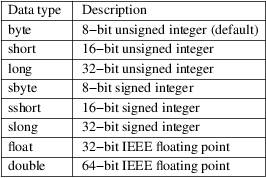
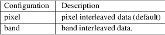
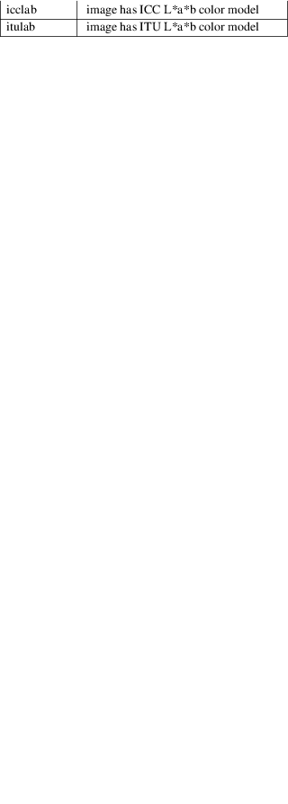

raw2tiff − create a TIFF file from a raw data file
raw2tiff [ options ] *input.raw output.tif
raw2tiff converts a raw byte sequence into TIFF. By default, the TIFF image is created with data samples packed (PlanarConfiguration=1), compressed with the PackBits algorithm (Compression=32773), and with each strip no more than 8 kilobytes. These characteristics can overridden, or explicitly specified with the options described below.
−H number
Size of input image file header in bytes (0 by default). This amount of data just will be skipped from the start of file while reading.
−w number
Width of input image in pixels (can be guessed, see Guessing the image geometry below).
|
option |
−b number |
number of bands in input image (1 by default).
−d datatype
type of samples in input image, where datatype may be one of:

−i config
type of sample interleaving in input image, where config may be one of:

−p photo
photometric interpretation (color space) of the input image, where photo may be one of:

|
−s |
swap bytes fetched from the input file. | ||
|
−L |
input data has LSB2MSB bit order (default). | ||
|
−M |
input data has MSB2LSB bit order. | ||
|
−c |
Specify a compression scheme to use when writing image data: −c none for no compression, −c packbits for the PackBits compression algorithm (the default), −c jpeg for the baseline JPEG compression algorithm, −c zip for the Deflate compression algorithm, −c lzw for Lempel−Ziv & Welch. |
raw2tif can guess image width and height in case one or both of these parameters are not specified. If you omit one of those parameters, the complementary one will be calculated based on the file size (taking into account header size, number of bands and data type). If you omit both parameters, the statistical approach will be used. Utility will compute correlation coefficient between two lines at the image center using several appropriate line sizes and the highest absolute value of the coefficient will indicate the right line size. That is why you should be cautious with the very large images, because guessing process may take a while (depending on your system performance). Of course, the utility canât guess the header size, number of bands and data type, so it should be specified manually. If you donât know anything about your image, just try with the several combinations of those options.
There is no magic, it is just a mathematical statistics, so it can be wrong in some cases. But for most ordinary images guessing method will work fine.
pal2rgb (1), tiffinfo (1), tiffcp (1), tiffmedian (1), libtiff (3tiff)
LibTIFF contributors
1988-2022, LibTIFF contributors